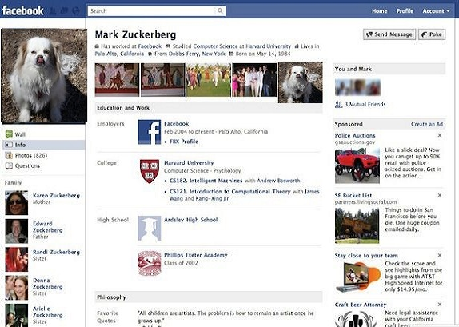

Sessions conducted
C#
title: "OOP concepts by example"
time: 10/18/18 11:52:12 UTC+00
number of attendees: 2
OAuth2
title: "Understanding OAuth2"
time: 10/10/18 03:52:12 UTC+00
number of attendees: 2
Life skills
title: "No joke: Learning the tricks of standup comedy"
time: 10/10/18 03:52:12 UTC+00
number of attendees: 12

Happy Puppy Jr.
A friendly being, with a strong passion to learn.
Areas of Interest
- Photography
- "I have always enjoyed the tactile activities that coax nature to reveal its beauty, be it gardening, rock and gem collecting, wood working, to name a few. Photography’s similar motivation produces a visual vehicle for better understanding the world and for sharing this knowledge with others, turning us into story tellers."
- Cosmology
- all aspects of the Cryogenic Dark Matter Search (CDMS) experiment, in the building of balloon-borne instruments to detect minute signals from the Big Bang as imprinted on the Cosmic Microwave Background, and in the Laser Interferometer Gravitational-wave Observatory (LIGO), a network of multi-kilometer interferometers designed to search for gravitational waves.
- JAVA web stack
- Web Frameworks like Struts / Spring Service Oriented Architecture / Web Services - SOAP / REST Web Technologies like HTML, CSS, Javascript and JQuery Markup Languages like XML and JSON